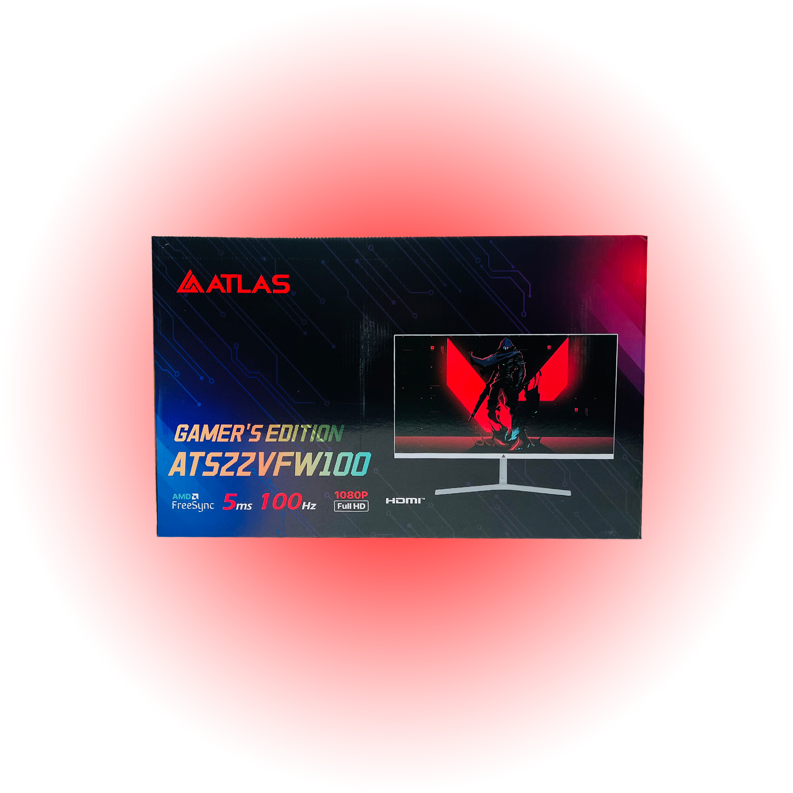
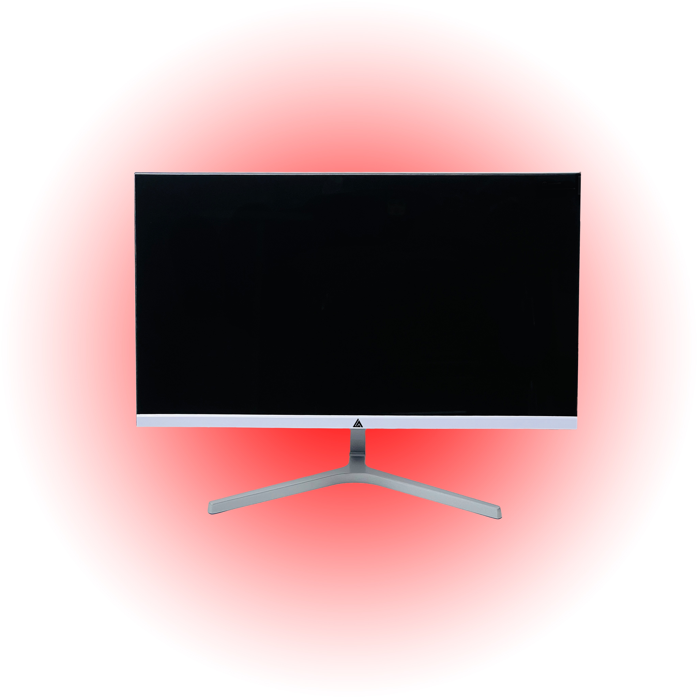
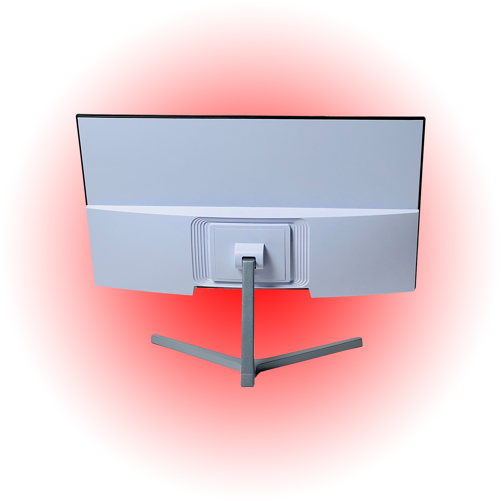

Monitor Series
ATLAS ATS22VFW100 Gamer's Edition 21.5" 100Hz Fast-Response Gaming LED Monitor
Full HD 1920x1080 Resolution - Provides crisp, sharp visuals for an immersive viewing experience

Built for real-world performance.
Full HD 1920x1080 Resolution - Provides crisp, sharp visuals for an immersive viewing experience. 100Hz Refresh Rate - Ensures smoother motion, ideal for gaming and fast-moving content. Anti-glare VA Panel - Reduces reflections and offers consistent color reproduction from all angles. Versatile Connectivity - Includes VGA, HDMI, and DC power input for easy connection to multiple devices. VESA Mount Compatibility - Allows flexible installation options to fit various workspace setups.
Full HD 1920x1080 Resolution
Provides crisp, sharp visuals for an immersive viewing experience
100Hz Refresh Rate
Ensures smoother motion, ideal for gaming and fast-moving content
Anti-glare VA Panel
Reduces reflections and offers consistent color reproduction from all angles


Full HD 1920x1080 Resolution
- Provides crisp, sharp visuals for an immersive viewing experience
100Hz Refresh Rate
- Ensures smoother motion, ideal for gaming and fast-moving content
Anti-glare VA Panel
- Reduces reflections and offers consistent color reproduction from all angles
Versatile Connectivity
- Includes VGA, HDMI, and DC power input for easy connection to multiple devices
| Feature | Details |
|---|---|
| SKU | 22VFW100 |
| Category | Monitor |
| Availability | In stock |
| Full HD 1920x1080 Resolution | Provides crisp, sharp visuals for an immersive viewing experience |
| 100Hz Refresh Rate | Ensures smoother motion, ideal for gaming and fast-moving content |
| Anti-glare VA Panel | Reduces reflections and offers consistent color reproduction from all angles |
| Versatile Connectivity | Includes VGA, HDMI, and DC power input for easy connection to multiple devices |
| VESA Mount Compatibility | Allows flexible installation options to fit various workspace setups |